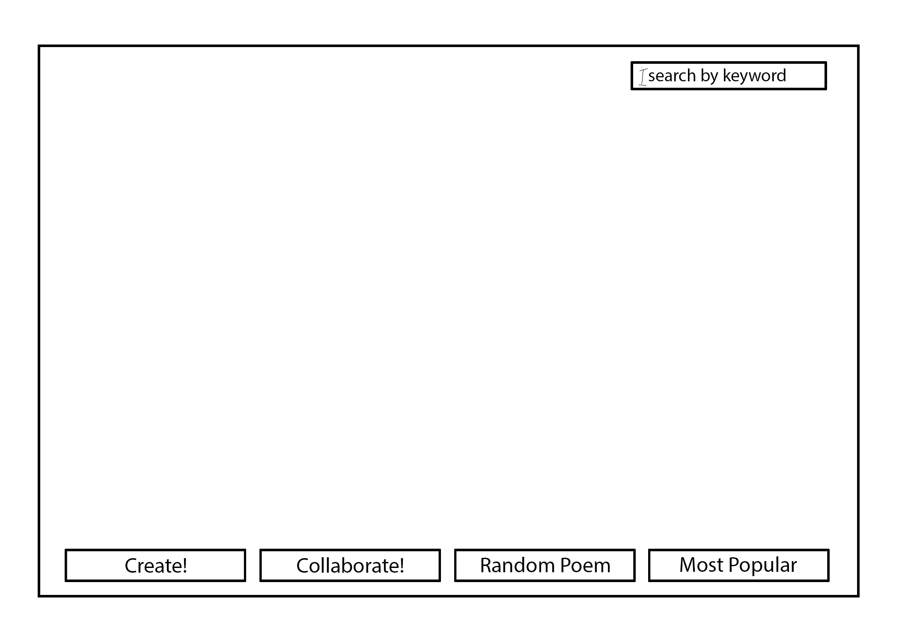
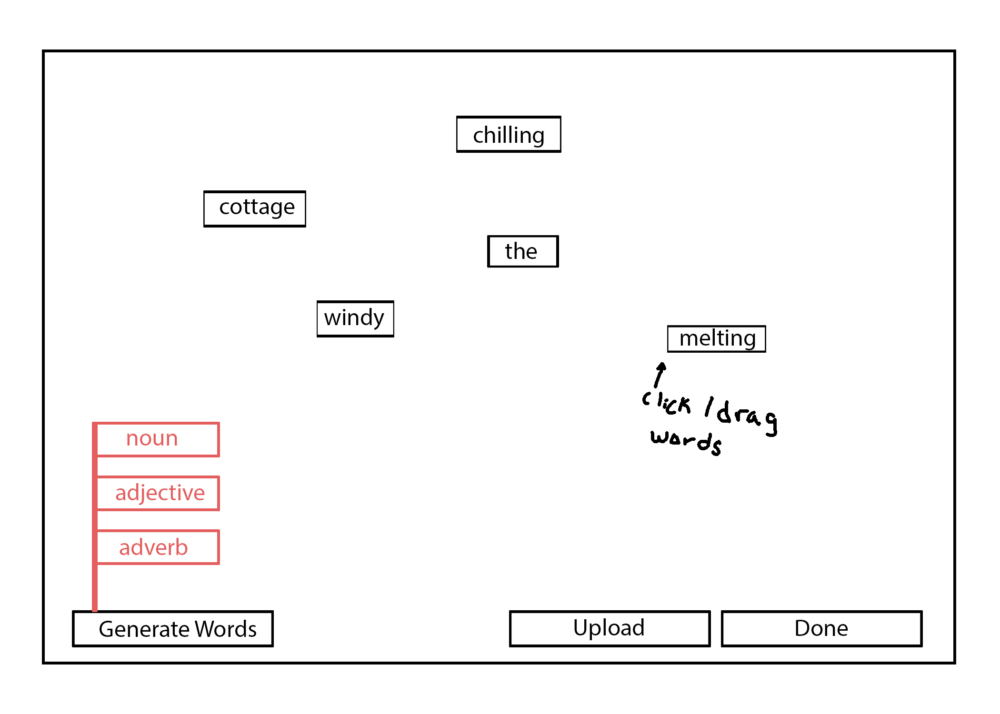
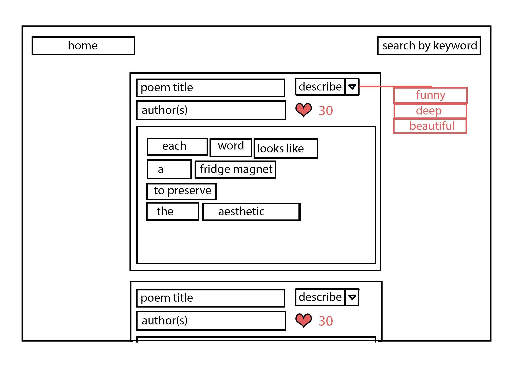

1) What is your starting topic? What importance does it hold for you? For others? Why is it important to make this topic into an explorable networked space?
My roommates and I have two magnetic poetry sets with which we make beautiful (terrible) poems on our washing machine (our fridge isn’t magnetic). We generally just make our own poems, but will occasionally add to or rearrange another roommate’s poem to improve it. It’s really fun to come home to a brand-new strange and beautiful masterpiece that wasn’t there that morning. The one drawback is that we’ll sometimes struggle to make a new poem because we’re missing key words (pronouns, prepositions, etc). Adding custom words is a no-go, because what makes magnetic poetry so much fun in the first place is having to be creative with the provided words and nothing else.
That’s where the idea for Collective Fridge Magnet Poetry Project came from. Users would be able to make a poem akin to one you would make with magnets on a fridge, but with randomized words generated by a computer. After finishing their poem, users would be able to save and optionally upload their masterpieces to the Collective Fridge Magnet Poetry Project server, where other users could see them as well. It could also be interesting if users could reuse the same word set as another user and “remix” their poems.
I feel that being able to share finished poems is crucial to the project. It can be nice to write for yourself, but I think that a large part of what makes magnetic poetry so much fun is showing it off to other people. It’s very validating when other people appreciate your work, especially clever and/or silly magnetic poetry.
2) Think about the kind of relationship you wish to encourage between your users and this “space”. How can you use this “space” to destabilize the users and make them reflect on themselves, their environment and society?
Ideally, I’d like the Collective Fridge Magnet Poetry Project to encourage its users to be creative. I’d also like it to be a fun place to visit to kill time.
Users would be constrained to whatever select words were generated by the computer, and would have to find a way to make a coherent (or not) poem using only those words. Any supplemental words that might be requested by the user would also be computer-generated, so the entire process revolves around the user finding ways to be creative under extremely specific circumstances.
It would become even more challenging if a player decided to remix somebody else’s poem. Users would have to be creative in a different way: they are confined to an even more specific wordset and can no longer ask for any supplemental words.
Even if someone doesn’t feel like writing their own poem, there would still be something for them to do. They could instead browse through other people’s poems until they see one that they would like to remix. Reading someone’s bizarre or funny poem could cheer up someone who’s had a bad day, or maybe’s an artist or writer lacking inspiration could find a poem that inspires them to create something new.
Implementing a “like” system could also be interesting. Users could choose to “like” a poem that they see, and the most liked poems would be displayed on a separate page. It could be fun for the user to see what other people think are the best poems, and maybe even notice patterns in people’s sense of humor based on which poems are ranked highest.
A page that displays remixed poems side-by-side with the originals could also be a fun way for users to reflect or pick up on what the general consensus of what is considered a “funny”, or “beautiful”, or “clever” poem.
3) Think about the notion of empowerment. Will your “space” help, challenge, teach, enable collaboration, understanding between user(s)? How and Why?
The Collective Fridge Magnet Poetry Project would definitely challenge its users. Writing poetry is already a challenge in and of itself, but with a constrained wordset, it becomes even more of a challenge. This can be compounded by choosing to remix someone else’s poem, which has the user imposing an even stricter word constraint on themselves.
An extra-challenging mode would to make be a real-time collaborative poem with another user. Two users would be paired up randomly and be given a normal constrained wordset, but have to work together to make a single poem. The users would then have to learn about and work with another person’s ideas and preferences in order to make a poem together. The users may not even have the same intentions for a poem: one user may want to write something beautiful and thought-provoking, while the other may want to write something funny or bizarre. Even if two people happened to both want to create the same type of poem, they may not have the same idea of what constitutes a “funny” or “beautiful” poem. This interaction between two very different creative styles could be very enlightening, interesting, or even frustrating for a user. And since users are paired up randomly, each experience would be unique.
There isn’t much of a purpose for any of this other than that it’s a fun way to spend time that lets the user be creative or entertained.
Homepage:
Poem Creation:
Gallery View:
dudl (formerly known as Goggles) is a page you can bookmark that lets you draw on any webpage that you visit, and see the doodles of anyone else who also visited the website and used dudl.
Officially, dudl is made for “collaborative web design” (dudl), allowing web designers or their clients to draw on the websites they’re making to show possible changes in real-time. It’s an easy way to draft changes to a website, but it does come with a $5/month price tag (dudl).
In my experience, most people use it to draw on their favorite websites. It was really popular a few years back, but now it seems that many websites block the use of the application. This is probably for the best, as it’s difficult to moderate what people draw seeing as it’s accessible to literally anyone.
Although a lot of people used it for graffiti and occasionally inappropriate nonsense, some artists were able to use it to create collaborative pieces.
Storywars is a website that has two primary functions. Creative writers can write the first chapter of a story and then post it, allowing other writers to write the rest of the chapters. Alternatively, users can choose a story that they like and write the next chapter for it.
The website has a search bar that lets users filter through all available stories based on a keyword they type in. Writers can also browse stories by genre or theme from the “Discover” tab along the top of the page.
A key feature of Storywars is their draft system. If several people want to write the next chapter of a story, they must submit a draft. Once a second draft of a chapter has been added by a different user, a countdown begins. This countdown indicates to any other users that there is not much time left to add a draft to this particular story, and if they wish to write for it, they must submit it before the countdown reaches 0. When the countdown does reach 0, the drafts enter a “voting round” that lets other users read and vote for their preferred chapter. When the voting round is over, the most popular chapter gets submitted, and the cycle begins again.
Hello Poetry is a collection of poems submitted by users, either existing poems by well-known authors or poems that users have written themselves. The website is very simple, with only four main options.
The front page shows the top trending poem, which is decided by the amount of likes/loves/shares/etc. “Latest” shows the most recently submitted poems, down to the seconds. “Random” displays a random poem that was previously submitted. The most interesting option on the website is the “Make me…” link, which opens a drop-down menu that prompts the user to choose a mood or emotion. Clicking on one of those options filters and then displays poems based on what mood or emotion the uploader tagged it with when it was first uploaded.
The website is littered in ads in order to cover the costs of maintaining the site. Donations are also accepted, and users can choose to subscribe to the site for $7.50/month to permanently get rid of ads, as well as support the website and its community.
For starters, my Collective Fridge Magnet Poetry Project has many more constraints than any of the previous examples. In all three cases, users have full control over what they produce, whereas in my project, users are only able to work with computer-generated words. I think this is a more unique approach to building a collection of user-submitted poems.
Because of the word restrictions, users are forced to use their creativity in a much different way than they would in a more free-form program. Ideally, it would also be easier to moderate, as the program-imposed word restrictions would (hopefully) make it more difficult for someone with less-than-pure intentions to exploit the program to post offensive or harmful content.